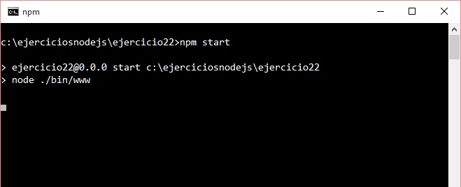
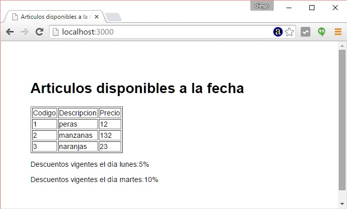

Uno de los objetivos fundamentales de utilizar un framework es ordenar nuestro código en proyectos de mediano o gran tamaño.
Vamos a ver como Express define y captura las peticiones del cliente (rutas).
Veremos como generamos las páginas de forma dinámica separando el código HTML (vista) y la lógica de la aplicación.
Problema
Desarrollaremos una aplicación de una sola página que nos muestra un listado de 3 artículos y los días que hay descuentos (en este ejemplo los datos no los extraemos de una base de datos para facilitar la comprensión de el manejo de ruta y plantillas HTML)
Paso 1
En el concepto anterior ya instalamos el 'express-generator' por lo que nos posicionamos en el directorio 'c:\ejerciciosnodejs' (o el directorio donde esta almacenando todos sus proyectos) y procederemos a crear nuestra aplicación Node.js utilizando Express y su generador de código:c:\ejerciciosnodejs> express ejercicio22 --hbs
Estamos llamando al programa 'express' y le pasamos dos parámetros, el primero indica el nombre de nuestro proyecto y el segundo el sistema de plantillas que utilizaremos para generar nuestras páginas dinámicas (handlebars)
Ya tenemos creado la carpeta ejercicio22 y dentro de esta los archivos y subcarpetas básicos:
ejercicio22
app.js
package.json
bin
www
public
images
javascripts
stylesheets
router
index.js
users.js
views
error.hbs
index.hbs
layout.hbs
Instalamos todas las dependencias de módulos:
c:\ejerciciosnodejs\ejercicio22>npm install
Cuando llamamos a 'npm install' sin ningún otro parámetro lo que hace es buscar el archivo 'package.json' y proceder a instalar todos los módulos especificados en la propiedad 'dependencies'.
Ahora ya tenemos creado la carpeta 'node_modules' con las 7 carpetas que coinciden con las dependencias especificadas en el archivo json:
body-parser
cookie-parser
debug
express
hbs
morgan
serve-favicon
Recordemos que hasta ahora hemos creado un esqueleto funcional de una aplicación Node.js utilizando el framework Express y lo podemos ejecutar:
Podemos ejecutar nuestra aplicación mínima creada con el 'express-generador':
c:\ejerciciosnodejs\ejercicio22>node ./bin/www
Y ya podemos solicitar al servidor la página raíz del sitio:

Recordemos que otra forma de iniciar a nuestro proyecto en Node.js cuando definimos el archivo package.json:
En lugar de escribir:
c:\ejerciciosnodejs\ejercicio22>node ./bin/www
Escribimos:
c:\ejerciciosnodejs\ejercicio22>npm start
Recordemos que en el archivo json hay una propiedad start donde definimos el archivo que inicia nuestra aplicación:
"scripts": {
"start": "node ./bin/www"
},
Paso 2
Veamos donde se encuentra el código cuando desde el navegador solicitamos la raíz del sitio:
http://localhost:3000/
Si abrimos el archivo app.js que creó el generador podemos encontrar dos líneas que especifican que archivo procesará la petición HTTP de la raíz del sitio:
var express = require('express');
var path = require('path');
var favicon = require('serve-favicon');
var logger = require('morgan');
var cookieParser = require('cookie-parser');
var bodyParser = require('body-parser');
var routes = require('./routes/index');
var users = require('./routes/users');
var app = express();
// view engine setup
app.set('views', path.join(__dirname, 'views'));
app.set('view engine', 'jade');
// uncomment after placing your favicon in /public
//app.use(favicon(path.join(__dirname, 'public', 'favicon.ico')));
app.use(logger('dev'));
app.use(bodyParser.json());
app.use(bodyParser.urlencoded({ extended: false }));
app.use(cookieParser());
app.use(express.static(path.join(__dirname, 'public')));
app.use('/', routes);
app.use('/users', users);
// catch 404 and forward to error handler
app.use(function(req, res, next) {
var err = new Error('Not Found');
err.status = 404;
next(err);
});
// error handlers
// development error handler
// will print stacktrace
if (app.get('env') === 'development') {
app.use(function(err, req, res, next) {
res.status(err.status || 500);
res.render('error', {
message: err.message,
error: err
});
});
}
// production error handler
// no stacktraces leaked to user
app.use(function(err, req, res, next) {
res.status(err.status || 500);
res.render('error', {
message: err.message,
error: {}
});
});
module.exports = app;
Requerimos el archivo index que se encuentra en la carpeta routes:
var routes = require('./routes/index');
Llamamos al método use del objeto app que se creó previamente y le pasamos la ruta raíz y la referencia del módulo que requerimos previamente:
app.use('/', routes);
Tener en cuenta que no hacemos ningún cambio al archivo app.js
Paso 3
Ahora si procedemos a la apertura del archivo index.js que se encuentra en la carpeta routes:
var express = require('express');
var router = express.Router();
/* GET home page. */
router.get('/', function(req, res, next) {
res.render('index', { title: 'Express' });
});
module.exports = router;
Primero obtenemos la referencia del objeto express:
var express = require('express');
Con la referencia de nuestra aplicación express llamamos al método Router():
var router = express.Router();
Capturamos la raíz cuando ocurre una petición tipo GET:
router.get('/', function(req, res, next) {
En este archivo es donde por defecto el generador de Express pasa como parámetro un objeto literal para que sea incluido en la página HTML:
{ title: 'Express' }
Este archivo lo modificaremos para responder a nuestro problema que era "listar 3 artículos y los días que hay descuentos":
var express = require('express');
var router = express.Router();
/* GET home page. */
router.get('/', function(req, res, next) {
var datos={
titulo:'Articulos disponibles a la fecha',
articulos: [
{ codigo: 1,precio:12,descripcion: 'peras' },
{ codigo: 2,precio:132,descripcion: 'manzanas' },
{ codigo: 3,precio:23,descripcion: 'naranjas' },
],
descuento:{lunes:'5%',martes:'10%'}
};
res.render('index', datos);
});
module.exports = router;
Hemos definido un objeto literal llamado datos que tiene tres atributos:"titulo","articulos" y "descuento".
El atributo "titulo" es un string, el atributo "articulos" es un vector y el atributo "descuento" también es un vector.
Ahora cuando llamamos al método render pasamos como segundo parámetro el objeto y en el primer parámetro indicamos el nombre del archivo HTML donde se deben incrustar estos datos.
Paso 4
Ahora tenemos que modificar el archivo index.hbs que se encuentra en la carpeta "views" y su contenido por defecto es:
<h1>{{title}}</h1>
<p>Welcome to {{title}}</p>
Recordemos que el generador de Express pasaba un objeto literal que tenía una propiedad llamada "title".
Borramos estas líneas y procedemos a generar una página HTML rescatando la información que tiene el objeto literal 'datos':
<h1>{{titulo}}</h1>
<table border="1">
<tr>
<td>Codigo</td><td>Descripcion</td><td>Precio</td>
</tr>
{{#each articulos}}
<tr>
<td>{{codigo}} </td> <td>{{descripcion}}</td> <td>{{precio}}</td>
</tr>
{{/each}}
</table>
<p>Descuentos vigentes el día lunes:{{descuento.lunes}}</p>
<p>Descuentos vigentes el día martes:{{descuento.martes}}</p>
El sistema de plantilla que utilizamos se llama Handlebars y nos permite incrustar las propiedades del objeto que le pasamos al método render.
Como vemos utilizamos dos llaves de apertura y cerrado para los lugares donde queremos remplazar en forma dinámica datos que le pasamos desde nuestro programa en Node.js.
También existen estructuras repetitivas para recorrer vectores:
{{#each articulos}}
<tr>
<td>{{codigo}} </td> <td>{{descripcion}}</td> <td>{{precio}}</td>
</tr>
{{/each}}
Podemos consultar la sintaxis de este lenguaje en: handlebarsjs.
Otra cosa que podemos haber notado que no tenemos la cabecera de la página HTML, esta se encuentra en un archivo llamado "layout.hbs" que también se encuentra en la carpeta views y su contenido inicial es:
<!DOCTYPE html>
<html>
<head>
<title>{{titulo}}</title>
<link rel='stylesheet' href='/stylesheets/style.css' />
</head>
<body>
{{{body}}}
</body>
</html>
Donde aparece entre triple llaves body será remplazado por el contenido del archivo index.hbs ya procesado. Luego podemos cambiar el elemento title por el atributo titulo del objeto que pasamos desde la aplicación Node.js:
En el sistema de plantilla Handlebars las triple llaves permiten incrustar los los caracteres < y >
Con doble llaves se tranforman los caracteres < en < y > en > por eso es indispensable encerrar {{{body}}} con triple llaves.
Ejecutemos nuestro programa desde la línea de comandos:

Recordemos que mediante el comando npm start lo que hace es buscar en el archivo package.json la propiedad "start" ("start": "node ./bin/www") que contiene el nombre de archivo principal de nuestra aplicación.
Ahora desde el navegador podemos solicitar la raiz del localhost en el puerto 3000 y tenemos como resultado:

Esta es la forma de organizar los archivos en una aplicación con el framework Express.
Este proyecto lo puede descargar en un zip con todos los archivos desde este enlace : ejercicio22